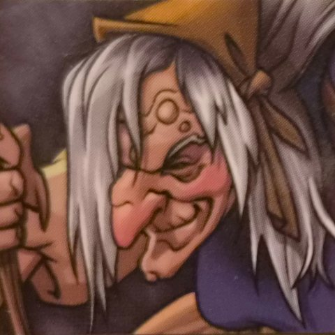
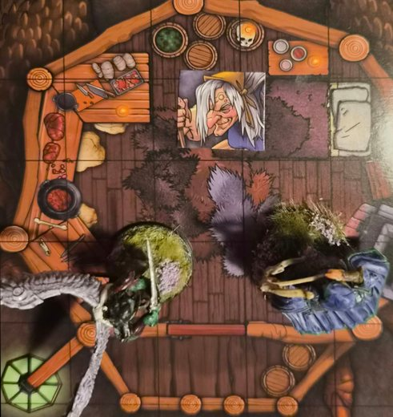

La Révérende Mère Alba, la sorcière immortelle de la fête

- Rôle : elle est derrière l'effacement des souvenirs par la fête des Mille Merveilles. ⚑ La fête foraine Les héros l'ont rencontrée dans la dernière attraction de la fête. Les joueurs la connaissent.
- Madame Vespa, directrice de la troupe, ne joue aucun rôle dans l'effacement des souvenirs.
Son histoire
- 737 CR : la Déesse Douce lui apparaît et lui demande de fonder son temple à Bourg-Preux, « afin de soulager la région martyrisée par la nécromancie des Archontes ».
- Elle devient l'une des personnalités les plus aimées de l'histoire de la Marche Franche.
- 767 CR : après une nouvelle apparition de la Déesse, elle part dans les Landes Grises et disparaît au sud de la forêt du Fauvois.
Version de la campagne
- Elle n'est jamais morte. La Déesse Douce lui a donné l'éternité pour guérir la terre martyrisée par la guerre.
- Son remède : l'oubli. Elle a créé la fête des Mille Merveilles, qui recueille les souvenirs des massacres, des deuils et des peurs.
- Elle sait que l'oubli rend les peuples plus prompts à repartir en guerre. Mais elle sait aussi que certaines blessures doivent être oubliées.
- La fête ne garde pas les souvenirs pour toujours : elle les rend aux esprits prêts à les porter.
Description

On croyait la Révérende Mère Alba disparue en 767. Immortelle, elle soigne les traumatismes de la guerre par l'oubli : sa fête des Mille Merveilles vole les souvenirs trop lourds, et les rend aux esprits prêts à les porter.